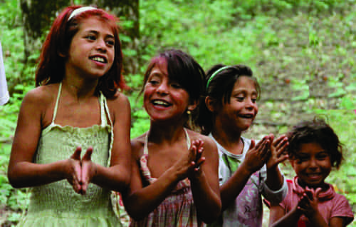

< < < Back
Why You Should Not Be Afraid Of Selective Prejudice – Return Of Kings
Over breakfast, my son laid out his plan to kill the Russians. We should tunnel under their country and blow them up. Why does a five-year-old already hate Russians? It is a study in the way prejudices are formed.
Most people he comes in contact with here in Ukraine fear the Russians. Their military power is a threat, and after a several century history of betrayals we don’t trust them. Russians look like him and speak the same language. Several of our friends are Russian. And he had no answer to the question, what if the Russians get mad and kill him first?
Who teaches prejudice?
Prejudiced against this???
In “South Pacific,” Oscar Hammerstein had Lieut. Cable deliver a line beloved of liberals: “You’ve got to be taught to hate and fear. You’ve got to be carefully taught” Not so! Nobody has taught him to hate the Russians. He deduced it himself.
Later, as we were waiting at a bus stop alongside some Gypsies. He said “Daddy, they’re dirty.” I shushed him. Though none of our Gypsies seem educated or speak English, he should develop the habit of being circumspect.
Moreover, they are not dirty. Though the women wear garish leopardskin toreador pants and a bit more jewelry than I would fancy, they seem clean. Though they have more children than it seems they could afford, they treat them well. The main issue is that they are different.
The origin of his opinions is evident. Gypsies live in condemned, unheated houses on the right of way for a planned subway. Their laundry flaps in the breeze and their children play in the dirt. Ukrainian mothers shoo their children to another part of the beach when the Gypsies come to bathe. Local convenience store owners treat them less than courteously.
What do I tell him? A five-year-old operates on simple, binary principles. People are either good or they are not. He wants a rule of thumb to apply to all Russians or all Gypsies. Life would be simpler.
Simplicity does not work
Simple-minded, and wrong. You can’t abdicate thinking.
A simple approach to the question of prejudice leads to problems. Liberals blindly refuse to accept that different peoples have different characteristics. They condemn you as a racist if you mention the obvious. The core theme of Daniel Kahneman’s “Thinking Fast and Slow” is that the human brain is a lazy organ. While we have the ability to think through problems, it requires a lot of time and burns a lot of calories. We are programmed to take shortcuts.
Most of the time the shortcuts don’t cause problems. If we avoid all mushrooms because some of them are poisonous, will still get enough calories. If we don’t give money to beggars or pick up hitchhikers we may miss some interesting experiences, but we won’t be exploited or victimized.
Sometimes our shortcuts—or prejudices—hurt others. As a landlord, I would have avoided some hassle by not renting to minorities. On the other hand, it would have been unfair to judge all minorities by the behavior of some. That is what nondiscrimination laws are all about. I took my lumps when I made mistakes, and avoided further hassle by selling the rental units in dicey areas to people with stronger stomachs.
Prejudice, Discrimination, Toleration and Diversity
A study in toleration. You may not like them, but you do business.
Dictionary.com defines prejudice in this context as “an unfavorable opinion or feeling formed beforehand or without knowledge, thought, or reason.” It is a state of mind, an opinion.
Discrimination is prejudice expressed through action. Government cannot control what you think, but they can judge your actions and what you say. More than that, they may impute a state of mind—prejudice—from your actions. Liberals are quick to cry prejudice on the basis of almost anything you utter. Discriminate as a landlord against unemployed men—disproportionately minority—or dare to mention facts such as FBI statistics or PISA and SAT scores, they invariably call you a racist.
Tolerance is the old-fashioned virtue of dealing civilly with all people regardless of what you may think. Though he may have privately despised what they represented, Trump the businessman entertained Bill and Hillary Clinton. I tell my son to answer politely and enjoy the conversation when Gypsy mothers ask him how he is. They appear sincere. They like kids. Moreover, it is of no benefit to him to refuse.
Lastly, diversity is a neutral adjective describing a state of affairs. A library can have a diverse selection of books, a garden a diverse assortment of plants, or a neighborhood a diverse population. This is neither good nor bad. It is a different matter if the books are pulp fiction, the plants are weeds, or the people are criminals. To cite the most popular positive example, a diversity of nationalities ensures the epicure of a wide selection of restaurants. Other benefits of a diverse neighborhood are harder to enumerate. The question is not diversity itself, but what of what the diversity is comprised.
Cui Bono
It is in the government’s interest to minimize prejudice. It makes life easier for teachers, police and administrators. Thus they advocate “celebrating diversity.”
The individual’s interest is different. Ours is optimizing our evolutionary success. This means increasing our own odds of survival and that of having children to give us grandchildren.
Prejudice plays a role in this. Mankind has always been tribal, xenophobic, and nationalistic. It has caused great wars, which is why there is such a jihad against prejudice at the moment. We are told many times over about how prejudice against Jews led to the Holocaust. Not mentioned, because the victims are not as articulate, have been the genocides against Ukrainians by the Soviets, against Armenians by Turks, and against Palestinians by Israelis. In any case, prejudice has a bad name because it precipitated some of the great tragedies in the last century.
The vast difference the 21st century is that every advanced people in the world is having children at below the replacement level. Our technology continues to make resources available at an ever-increasing rate, and we are producing people to use them at a decreasing rate. This is a virtuous trend.
On the other hand, we do need to teach our children to mindfully protect what is theirs. The welfare state increasingly buys peace by redistributing from those who are able to produce to those who did not. It is not prejudice to see things as they are and to vote your self-interest.
Age and competence
The conceit of the diversity crowd is that they are smarter than us deplorables, and morally superior besides.
Intelligence has something to do with it. Simple people need simple rules. Two rules operative among simple peoples in today’s world are Infidel=Bad and White=Bad. Among those who suppose themselves better the rule is that one must be infinitely patient and discerning before imputing motives to people who say things like “Death to Infidels” or “Kill the white pigs.”
Some prejudices, such as against marijuana or gays, benefit those who harbor them. Such beliefs will help me have grandchildren. If and when my son is ready for a more nuanced view of the world, we can discuss it. While he is a child, simple will serve. It will keep him out of danger.
Deep Roots

Our Kyiv Gypsies are not bad neighbors.
Our prejudices, our fast thinking in Daniel Kahneman’s terms, have a long history. They are useful. They keep us out of sketchy neighborhoods; help us avoid poor romantic partners and bad business transactions. Significantly, our prejudices protect us against other people’s prejudices. If we can anticipate that people will be unfavorably disposed toward us, it is only prudent to be wary when dealing with them.
I caution my family to avoid large congregations of Gypsies in Western Europe. Ours in Kyiv are benign. Since the Ukrainians simply would not put up with it, they do not aggressively panhandle or pickpocket. Thus, prejudice serves both parties. Western Europe, conversely, is tolerant to its own detriment.
A prejudice against Russian people would not help my son. The Russian state is another matter. Their deceit has been reported by observers over the centuries, from Custine to Zinoviev. He should not endorse Ukraine’s entering a deal unless it is in Russia’s long term interest to honor it.
It is perfectly reasonable to be logically inconsistent. One can recognize that the influx of illegal aliens is a drain on America’s resources, something that cannot be sustained. But on the other hand, African ladies are great at elder care and Hispanics for day labor for cleaning up your yard. What makes sense on a personal level might not on a societal level. Whatever the situation, a sophisticated person should have the presence of mind not to betray his prejudices when dealing with individuals.
Being carefully taught – back to Hammerstein
Today, people don’t go to college to learn how to think so much as to be told how to think. This is one reason why non-college-educated “deplorables” may be better informed voters.
In any case, a parent should teach a child to recognize and examine his prejudices, but not necessarily abandon them. If they did not have a bit of substance they wouldn’t exist in the first place. He can decide in time the extent to which he can relax them. Prejudice against Russians and Gypsies in Ukraine won’t help my son in any meaningful way. Elsewhere it is different. For an American, accepting government teachings about prejudice can be prejudicial to your well-being. That is a good reason to be elsewhere.
Read More: Immigrants Are Now Occupying Private Property In Sweden